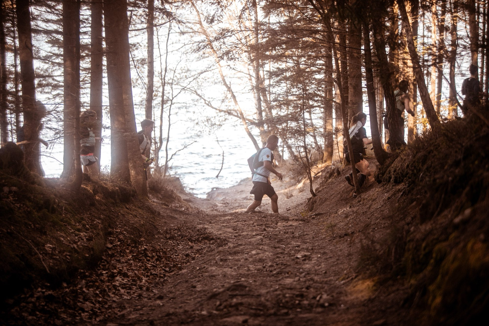

À vous de choisir.
Le 17 KM* pour découvrir, le 37 KM** pour se dépasser, le 54 KM*** pour voir les choses en grand.

17 KM*
Le bord du lac, quelques montées franches mais raisonnables, et tout le paysage. Parfait pour un premier trail ou une reprise.
Pour qui ?
Premier trail, coureurs sur route qui veulent goûter aux sentiers, ou envie de profiter du paysage sans y passer la journée.
Ravitaillements
Un point de ravitaillement sur le parcours et le ravitaillement d'arrivée au village. De quoi tenir sans matériel lourd.
Esprit
Course chronométrée mais avant tout conviviale. On vient pour les kilomètres et la ligne d’arrivée... Mais aussi pour lever le nez et en prendre plein les yeux !

37 KM**
Crêtes, forêts profondes et passages techniques en bordure du lac. Ça grimpe, ça redescend… et ça recommence.
Pour qui ?
Pour les habitués du trail qui aiment le dénivelé et le terrain technique. Exigeant, mais tout à fait faisable avec un entraînement régulier.
Ravitaillements
Deux points de ravitaillement liquide et solide, aux km 11 et km 26, plus le ravitaillement complet à l'arrivée au village. Détails et matériel sur la page Infos Pratiques.
Barrières horaires
Barrière au km 11,3 à 2h15 et au km 26,2 à 4h45 (Col de la Chapelotte, au retour), pour la sécurité de tous. Horaires confirmés avant la course.

54 KM***
Le grand format sur les reliefs qui dominent le lac : crêtes, forêts profondes et le plus gros morceau de dénivelé de la journée. Pour ceux qui aiment les longues sorties… et les bons ravitaillements.
Pour qui ?
Pour les coureurs à l'aise sur les longues sorties et le terrain technique. C'est le plus costaud des trois : mieux vaut arriver avec des kilomètres dans les jambes.
Ravitaillements
Ravitaillements liquides et solides répartis sur l'ensemble du parcours, plus le ravitaillement complet à l'arrivée au village. Détails et matériel obligatoire sur la page Infos Pratiques.
Départ & barrières
Départ à 07:30 depuis le village, le premier des trois. Barrières horaires adaptées à la distance, confirmées avant la course.
Avant de prendre le départ
Catégories d'âge, certificat ou PPS, matériel, barrières horaires, remboursement : tout est dans le règlement.
Vous avez choisi votre distance ?
Les inscriptions sont ouvertes. Rendez-vous le 4 avril 2027.